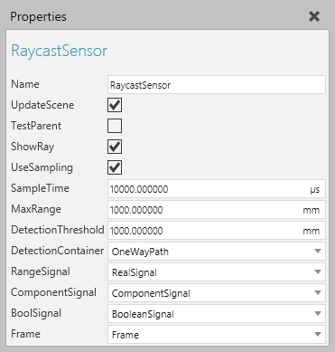

A Raycast Sensor allows you to cast a ray in the 3D world for measuring distances and detecting components.

| Name | Description |
| Name | Defines the name of the sensor. |
| UpdateScene | Defines if the simulation world (all components) is updated on each sample (SampleTime). A True value is needed when detecting moving components. And if True, for better performance, assign DetectionContainer to update only the components contained there, instead of the whole World. Otherwise, for performance, use a False value. |
| TestParent | Defines if the sensor detects geometry in the node it is attached to in the 3D world. Generally, a True value is used to detect self collisions, for examples doors in a machine colliding with one another. |
| ShowRay | Turns on/off the visibility of the ray in the 3D world. |
| UseSampling | Defines if the sensor operates using a sampling interval or pulse driven by a received signal. A True value uses sampling mode and is further defined using SampleTime. A False value uses pulse mode in which a signal acts as a trigger for detecting components. In pulse mode, the Connections property of a signal type behavior has the sensor listed as a connection and some kind of iteration is used to operate the sensor, for example a loop written in a Python Script or some logic defining the signal's frequency. |
| SampleTime | Defines the time interval between each sample if UseSampling is enabled. That is, the sampling interval of the sensor. |
| MaxRange | Defines the range used by the sensor for measuring distances. For example, if a detected component is closer than MaxRange, the sensor will signal the component's distance using RangeSignal. |
| DetectionThreshold | Defines the range used by the sensor for detecting components. For example, if a detected component is closer than DetectionThreshold, the sensor will trigger ComponentSignal and BoolSignal. |
| DetectionContainer | Defines if the sensor only detects components in a specified container, for example a path in the sensor's component. |
| RangeSignal | Defines the Real Signal used to signal the length of the sensor's ray to a detected component. |
| ComponentSignal | Defines the Component Signal used to signal what component was detected by the sensor. |
| BoolSignal | Defines the Boolean Signal used to signal when a component triggers the sensor. |
| Frame | Defines the Frame feature referenced as the physical location of the sensor. The ray of the sensor is cast in the Frame feature's positive Z-axis direction. |